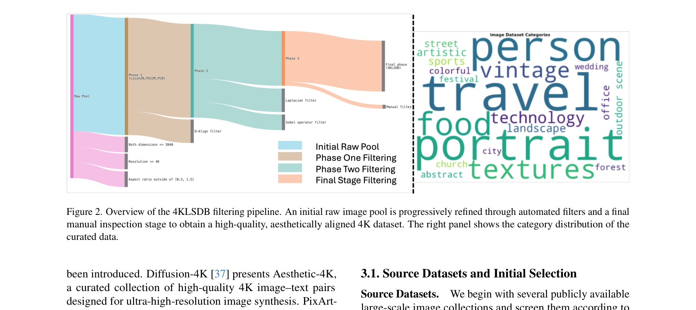
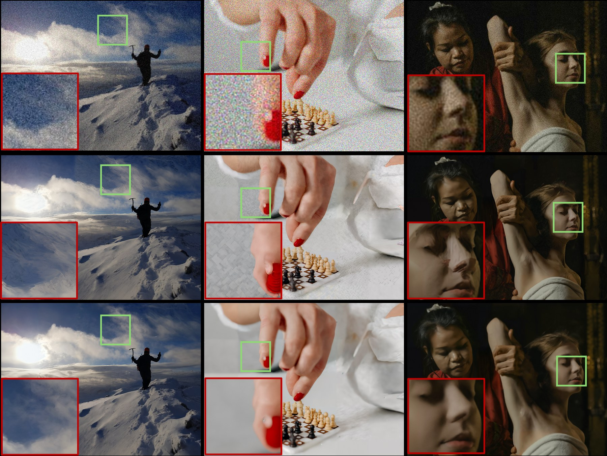
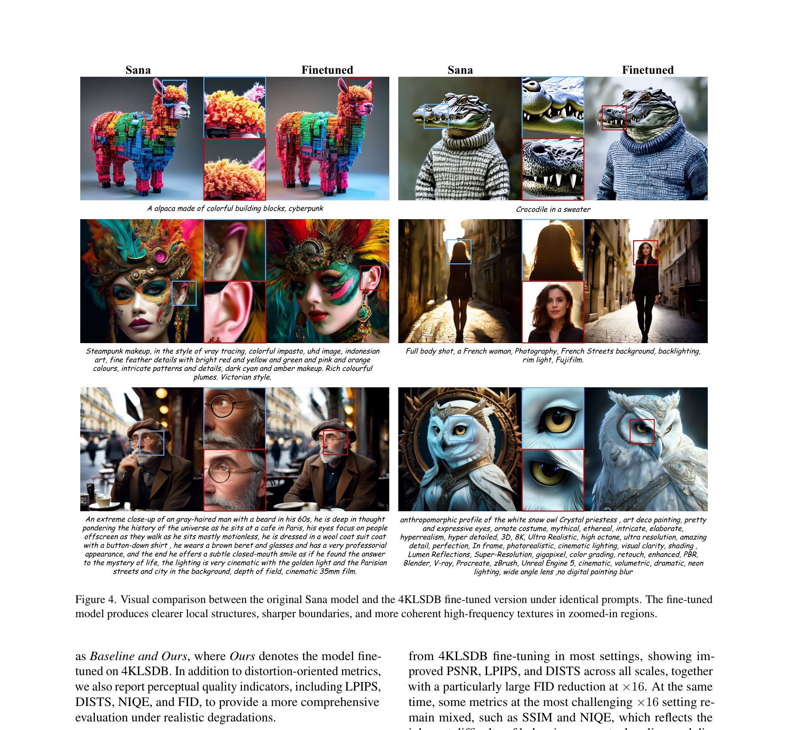

1Texas A&M University
2Hugging Face
3Visko Platform
† Corresponding author
4KLSDB is the first publicly released native-4K dataset that scales to over 100k images and supports both image restoration and generation.
| Dataset | #Train | #Val | #Test | Max Res. | Native 4K |
|---|---|---|---|---|---|
| DIV2K | 800 | 100 | 100 | 2K | ✗ |
| LSDIR | 84,991 | 1,000 | 1,000 | 2K | ✗ |
| DIV8K | 1,500 | 100 | 100 | 8K | ✓† |
| DiffusionDB | 14,000,000 | – | – | 1024×1024 | ✗ |
| HQ-Edit | ~200,000 | – | – | 900×900 | ✗ |
| 4KLSDB (Ours) | 129,484 | 2,000 | 1,984 | 4K | ✓ |
† DIV8K contains some 8K-resolution images, but its total scale remains limited for large-scale training.
A robust multi-stage filtering and quality-control pipeline combining rule-based checks, LMM-based aesthetic scoring, and human vetting.

Overview of the 4KLSDB filtering pipeline. An initial raw image pool is progressively refined through automated filters and a final manual inspection stage to obtain a high-quality, aesthetically aligned 4K dataset. Resolution-based pre-filtering enforces a minimum dimension of 3840 px and a $3840\times2160$ pixel budget. Q-Align is used to obtain quality and aesthetic scores, retaining the top 80%. Laplacian variance and Sobel-patch flatness ratio further remove overly flat, blurry, or low-texture samples. Two human annotators then review every remaining image, yielding the final native-4K dataset.
Native-4K supervision consistently boosts both classical SR and real-world SR models.
| Model | ×4 | ×8 | ×16 | |||
|---|---|---|---|---|---|---|
| PSNR↑ | SSIM↑ | PSNR↑ | SSIM↑ | PSNR↑ | SSIM↑ | |
| HiT-SR (pretrained) | 24.50 | 0.6839 | 22.25 | 0.6394 | 19.47 | 0.5741 |
| HiT-SR (4KLSDB) | 29.27 | 0.7896 | 24.75 | 0.6928 | 23.69 | 0.6414 |
| SwinIR (DF2K) | 24.11 | 0.6738 | 20.96 | 0.5915 | 19.20 | 0.5684 |
| SwinIR (4KLSDB) | 28.79 | 0.7774 | 25.89 | 0.6877 | 23.69 | 0.6376 |
| MambaIR (pretrained) | 25.92 | 0.7259 | 21.51 | 0.6382 | 19.47 | 0.5741 |
| MambaIR (4KLSDB) | 30.92 | 0.8216 | 23.84 | 0.7195 | 23.69 | 0.6414 |
| Method | Scale | PSNR↑ | SSIM↑ | LPIPS↓ | DISTS↓ | FID↓ |
|---|---|---|---|---|---|---|
| OSEDiff | ×4 | 27.36 / 27.50 | 0.7511 / 0.7568 | 0.2863 / 0.2546 | 0.1604 / 0.1431 | 28.07 / 28.35 |
| OSEDiff | ×8 | 23.86 / 24.10 | 0.6021 / 0.6188 | 0.5463 / 0.4252 | 0.1833 / 0.1448 | 19.56 / 17.74 |
| OSEDiff | ×16 | 22.65 / 22.69 | 0.6213 / 0.5966 | 0.6571 / 0.4866 | 0.2861 / 0.2170 | 51.76 / 33.97 |
| SeeSR | ×4 | 27.01 / 28.25 | 0.6996 / 0.7340 | 0.5231 / 0.4511 | 0.1407 / 0.1272 | 38.95 / 33.88 |
| SeeSR | ×8 | 24.10 / 24.50 | 0.6510 / 0.6713 | 0.5117 / 0.4628 | 0.1607 / 0.1551 | 77.46 / 74.46 |
| SeeSR | ×16 | 24.02 / 24.43 | 0.6810 / 0.7001 | 0.5594 / 0.5197 | 0.1699 / 0.1640 | 77.41 / 74.40 |
Each cell shows baseline / 4KLSDB fine-tuned. Bold marks the better result.
| Model | pCLIPScore ↑ | pNIQE ↓ |
|---|---|---|
| Sana (baseline) | 28.62 | 5.21 |
| Sana + 4KLSDB | 29.27 | 4.63 |
| Overall ↑ | Detail ↑ | Realism ↑ | Artifact ↑ | Alignment ↑ |
|---|---|---|---|---|
| 57.34% | 60.89% | 74.27% | 64.40% | 52.29% |
Double-blind pairwise win rate of 4KLSDB-fine-tuned Sana over Sana baseline.
Swipe or use arrows to browse comparisons across SR and T2I tasks.

From top to bottom: LR input, baseline SeeSR, and SeeSR fine-tuned on 4KLSDB (ours). Insets show sharper structures and more realistic local details.

Identical prompts and inference settings. Fine-tuning on 4KLSDB produces sharper boundaries and more coherent high-frequency textures in zoomed regions.
Dataset, code, and pretrained checkpoints are all openly released.
HiT-SR / SwinIR / MambaIR fine-tuned on 4KLSDB for ×4/×8/×16.
OSEDiff / SeeSR fine-tuned on 4KLSDB blind-degradation pipeline.
@inproceedings{zhu2026_4klsdb,
title = {4KLSDB: A Large-Scale Dataset for 4K Image Restoration and Text-to-Image Generation},
author = {Zhu, Zihao and Huang, Kuan-Ru and Xu, Zhaoming and Li, Renjie and
Wu, Bo and Bai, Ruizheng and Wu, Mingyang and Paul, Sayak and Tu, Zhengzhong},
booktitle = {DataCV @ CVPR 2026},
year = {2026},
url = {https://openreview.net/forum?id=VW0Fvdfv1k}
}